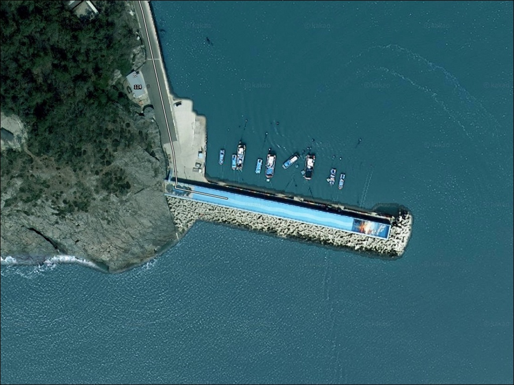
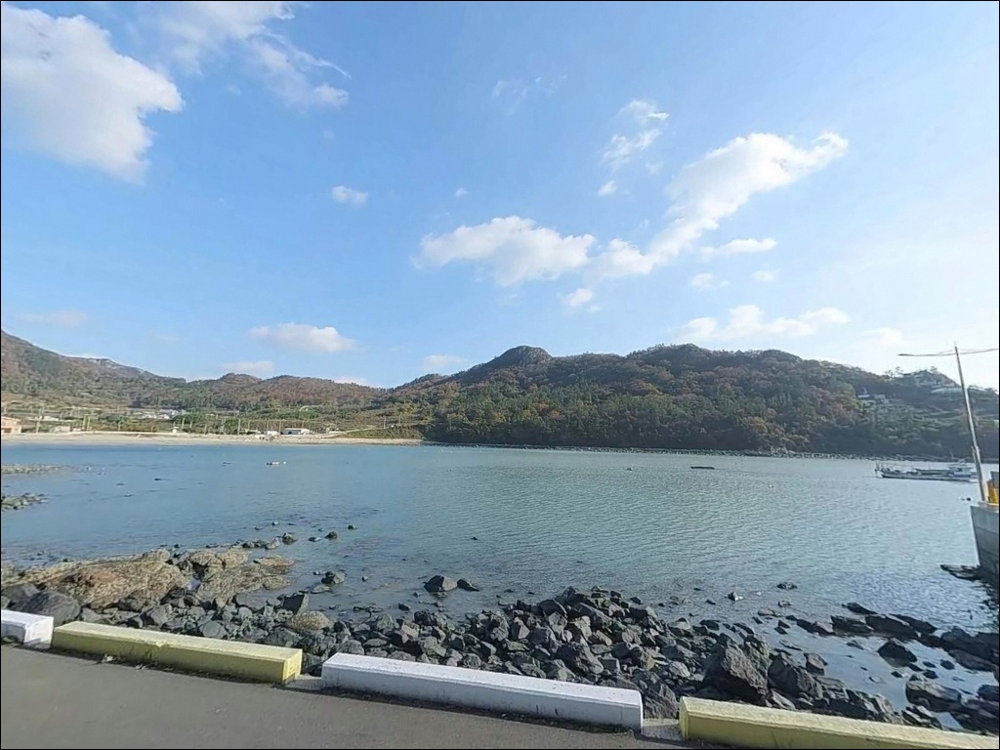
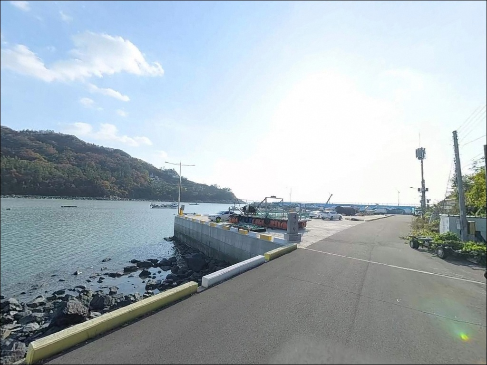
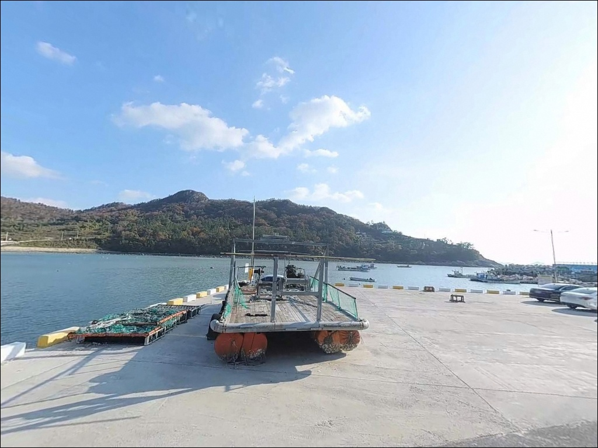
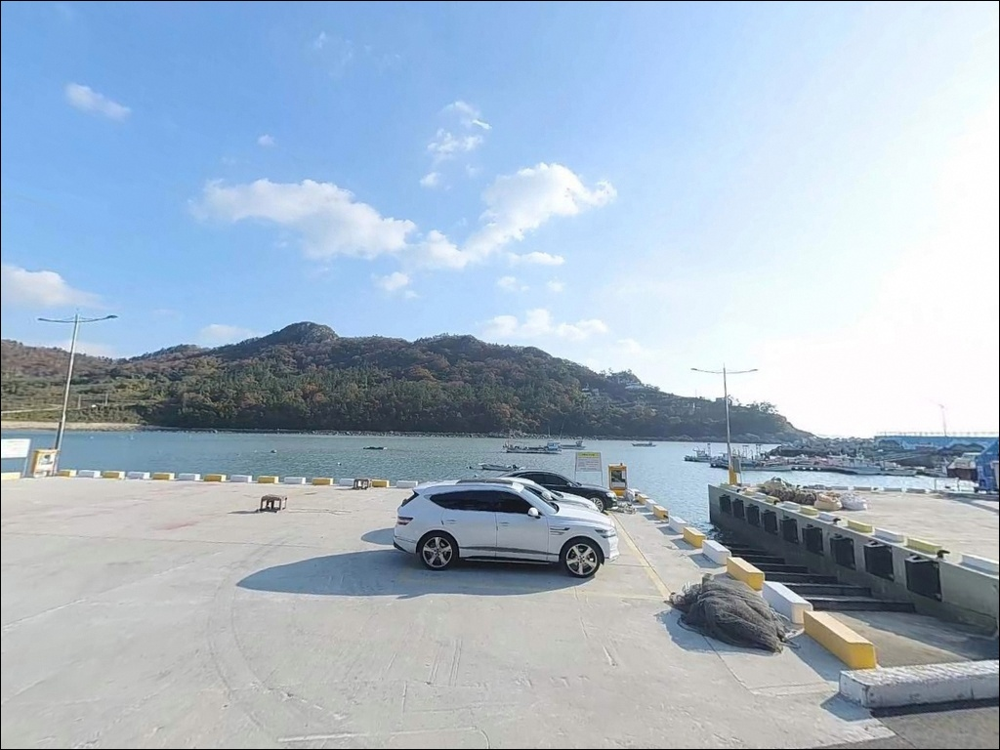
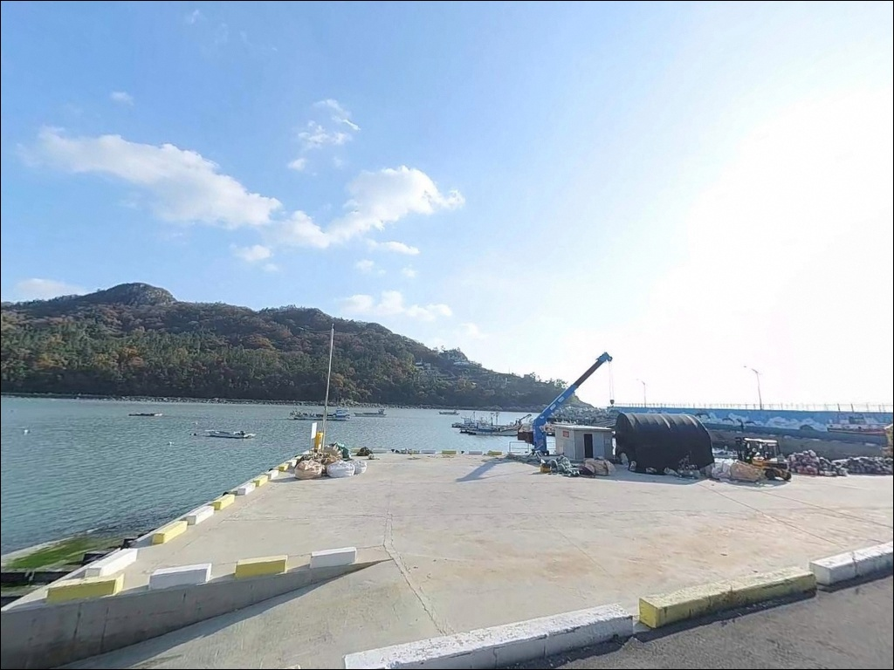
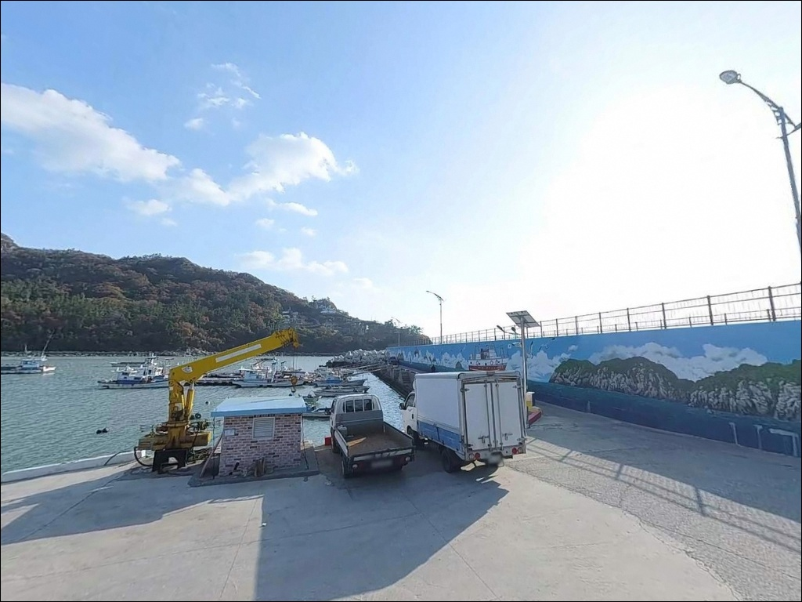
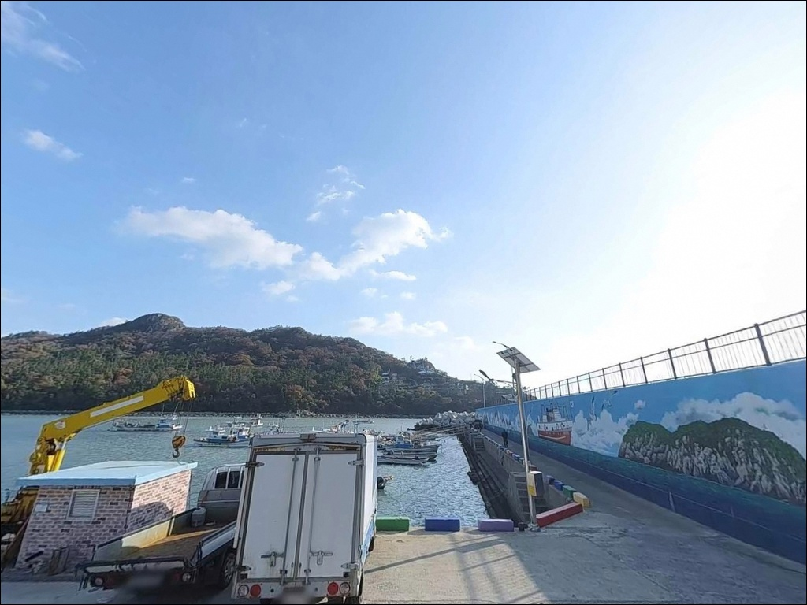
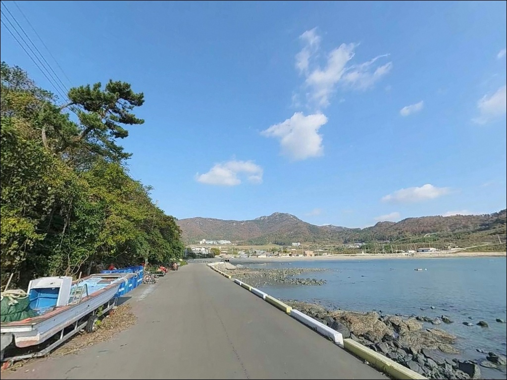

이 페이지에는 광고(제휴 링크 포함)가 있으며, 광고 링크를 통해 구매하면 운영자가 판매 수익 또는 수수료를 받을 수 있습니다. 포인트 사진: 카카오맵 스카이뷰·로드뷰. 이 페이지의 지도·사진 이미지는 카카오맵의 실제 서비스 이미지와 다를 수 있습니다.


상만리 선착장, 진도 전남 진도군 노을빛이 스며드는 차박, 낚시 겸용 감성 장소
포인트 안내
상만리 선착장
전남 진도군 임회면 상만리 1170-22
진도 남부 내만형 선착장은
간조가 깊어질수록 전면 수심이
급격히 낮아지는 구조입니다.
물때를 확인하지 않고 들어가면
도착했을 때 이미 낚시가 성립하지 않는 수심이
기다리고 있습니다.
상만리 선착장은 진도군 임회면 귀성마을 앞
소만(小灣)에 자리 잡은 마을 단위 소규모 포구입니다.
공식 어항으로 등재된 시설은 아니며,
온라인에 남아 있는 낚시 자료도 드문
아직 덜 알려진 포인트입니다.
그렇기에 진도 남부 해역의 청정 어자원을
조용히 탐색해 보기에 어울리는 자리이기도 합니다.
이 글은 상만리 선착장의
진입 여건, 지형 구조, 낚시 방식 적합성,
차박 체류 조건에 집중합니다.
조황 단정과 특정 어종 보장은
이 글의 범위에 포함되지 않습니다.

1. 진입 동선과 포인트 접근성
진도읍 방면에서 18번 국도를 타고
임회면 방향으로 내려오다
상만리 마을 안쪽 지방도로를 통해 진입합니다.
선착장까지 이어지는 구간은
마을 안길 수준의 좁은 도로이며,
진도읍 기준 차량으로 30분 안팎 거리입니다.
대형 SUV나 캠핑 장비를 갖춘 차량이라면
출발 전 위성지도(네이버지도·카카오맵)로
진입로 폭과 경사 구간을 미리 확인하는 편이 좋습니다.
선착장 앞 회차 공간이 넉넉하지 않으므로
후진 진출이 어려운 대형 차량은
진입 전 공터 여부도 함께 살펴야 합니다.
주차는 선착장 인근 공터를 이용하는 방식이 일반적이나
마을 어선의 이동 동선을 막지 않는 자리를
우선으로 잡아야 합니다.
국립남도국악원 앞 공용주차장은
선착장에서 가까운 거리에 있어
차량을 주차하고 도보로 접근하는 방식도
현실적인 선택지입니다.

2. 차박 환경과 야간 체류 여건
상만리 선착장은 귀성마을 생활권과 바로 인접해 있습니다.
야간에는 차량 통행이 드물고
전체적으로 조용한 분위기이지만,
민가와 가까운 구조상
프라이버시 확보는 제한적인 환경입니다.
선착장 바로 앞 공간은 어선 계류와 어업 작업을 위한
생업 구역이므로, 장시간 차박보다는
낚시 후 짧게 머무는 용도로 활용하는 편이 적합합니다.
가로등은 많지 않을 가능성이 있어
개인 조명 장비는 필수로 준비해야 합니다.
바다 차박을 주목적으로 삼는다면
국립남도국악원 앞 공용주차장을 거점으로
활용하는 방식이 더 안정적입니다.


3. 주변 편의시설 및 인프라 현황
상만리 선착장 반경 3km 이내에서
편의점이나 마트, 주유소를 기대하기는 어렵습니다.
임회면 중심권에서도 생활 상권이
크지 않은 편이므로,
식수·얼음·낚시 소품·연료는
출발 전 진도읍 또는 목포에서
미리 갖추고 들어와야 합니다.
가장 가까운 공용 편의시설은
국립남도국악원 앞 공용주차장 부근의 화장실입니다.
반경 3km권에는 죽림어촌체험마을(죽림리)이 있어
체험 안내소와 기본 편의시설을 운영하고 있습니다.
낚시 용품 구매처는 진도읍 기준으로 찾아야 하며,
현장에서 소품을 급히 조달하기는
어려운 여건입니다.
반경 10km권으로 이동하면
서망항(임회면 남동리) 일대에서
수산 물품과 기본 생활 인프라를 활용할 수 있습니다.
부족한 채비나 미끼가 있다면
이 동선을 먼저 살펴보는 편이 효율적입니다.

4. 진입 전 먼저 챙겨야 할 준비사항
상만리 선착장 방문 전에 가장 먼저 확인해야 할 것은
물때입니다.
진도 남부 내만 해역은 조류 변화가 빠르고
간조 시 선착장 전면 수심이 크게 낮아집니다.
바다타임에서 임회면 기준 물때를 확인하고
들물 전후 또는 만조 전후로
출발 시각을 맞추는 것이 기본 전략입니다.
진도 해역은 기상 변화가 빠른 편이므로
기상청 해상예보를 당일 아침 다시 확인하는 것이
현장 낭비를 막는 조건입니다.
내만 구조 선착장이라도 선착장 주변 양식장이
발달한 지역이 많으므로,
채비가 걸릴 수 있는 구간을 감안해
여분 채비를 넉넉히 준비하는 편이 좋습니다.
마을 선착장은 어선 조업이 이루어지는 생업 공간입니다.
어선 이동 동선과 어구에 접촉하지 않도록
자리를 잡는 것이 기본 매너이며,
야간에는 헤드랜턴과 구명조끼를
반드시 갖춰야 합니다.

5. 지형이 만드는 낚시 여건 — 이 포인트에서 기대할 수 있는 조건
상만리 선착장은 진도 남부 소만(小灣) 안쪽에
자리 잡은 내만형 포구 구조입니다.
선착장 내측은 비교적 잔잔하고,
전면 및 외측 방향은 진도 남쪽 해역에
직접 노출될 수 있는 위치입니다.
선착장 끝단으로 갈수록 수심이 깊어지는
점진적 수심 증가 구조를 보일 가능성이 있어
발 아래 근거리보다는 중·원거리 공략이
이 포인트 구조에 맞는 방식입니다.
진도 임회면 해역은 수심이 낮으면서도
조류가 빨라 어자원이 풍부한 것으로
이 일대 해역의 특성으로 알려져 있습니다.
상만리 앞 해역도 같은 조류 패턴의 영향권 안에 있으며,
들물이 살아나는 타이밍에
조류를 타고 이동하는 어종이 선착장 주변에 붙는
구조로 이해할 수 있습니다.
선착장 주변에는 소형 석축 구조가 있을 가능성이 있으며,
석축과 바닥 지형이 맞물리는 경계 구간은
감성돔, 붕장어, 노래미, 도다리, 숭어 등
바닥 지향성 어종이 기대되는 조건입니다.
가기 전에 임회면 일대 최신 조황을
반드시 검색해 보시기 바랍니다.


6. 이 선착장에 어울리는 낚시 스타일
이 포인트에서 가장 기본이 되는 낚시는
원투낚시입니다.
선착장 끝단이나 석축 방향으로
채비를 멀리 보낸 뒤
바닥을 천천히 훑는 방식이
내만형 지형 구조와 맞습니다.
진도 연안에서 원투로 감성돔, 도다리, 붕장어, 숭어를
노리는 사례가 꾸준한 만큼,
들물이 들어오는 시간대에 집중하면
입질 기대치가 올라가는 편입니다.
찌낚시도 이 포인트 구조에 어울리는 방식입니다.
조류가 살아나는 중들물 구간에
선착장 끝자락에서 조류 방향으로 채비를 흘리면
바닥층 어종에 닿을 수 있는 조건이 만들어집니다.
감성돔 릴찌낚시를 즐기는 낚시인이라면
들물 타이밍을 기준으로 자리를 잡는 방식이
효율적입니다.
야간에는 가벼운 루어 라이트게임을 시도해 볼 만합니다.
선착장 석축 주변이나 구조물 인근은
볼락이 서식하기 좋은 조건을 갖추고 있으며,
소형 지그헤드 채비로
구조물 경계선을 천천히 탐색하는
방식이 이 지형에 맞습니다.
에깅을 병행해 갑오징어나 주꾸미를
노려보는 것도 시즌에 따라 유효합니다.

7. 여건이 여의치 않을 때 — 플랜 B 동선
상만리 선착장 주차 여건이 좁거나
물때가 맞지 않을 때는
서망항(임회면 남동리)이 첫 번째 대안입니다.
해양수산부 지정 국가어항으로
방파제 규모가 크고 낚시 여건이 안정적입니다.
감성돔, 우럭, 학공치, 숭어 등 다양한 어종이
이 항구 방파제에서 기대되는 포인트로 알려져 있습니다.
상만리 동측으로 이동하면
헌복동 방파제(죽림리 일대)가 있습니다.
방파제 끝부분 기준 수심이 충분한 편이며
감성돔 찌낚시 포인트로
이 일대 낚시인들이 탐색하는 소형 방파제입니다.
상만리와 동선을 묶어 탐색하기에
어울리는 인근 포인트입니다.
서망항에서 조금 더 이동하면
진도항(팽목항, 임회면 연동리) 방면이 있습니다.
항만 주변 방파제 일부 구간에서
생활낚시가 이루어지는 곳이지만,
여객선 운항 구간 통제 여부를
현장 안내판에서 먼저 확인하는 것이 기본입니다.

물때를 알고 들어가면
상만리 선착장이 다르게 보입니다
원투낚시나 찌낚시를 즐기는 낚시인이라면
상만리 선착장의 내만형 지형 구조는
잘 맞는 조건입니다.
진도 남부 해역의 청정 어자원을
온라인 자료 없이 직접 발품으로 탐색해야 하는
답사형 포인트이기도 합니다.
반면 물때 확인 없이 간조 전후에 들어가거나
진입로 폭을 확인하지 않고
대형 차량으로 무작정 들어가면
낚시 자체가 불가능한 상황을 맞닥뜨릴 수 있습니다.
물때 확인, 진입로 점검, 자급 준비,
이 세 가지를 갖추고 들어가면
진도 남단 조용한 어촌 선착장에서
기억에 남는 한 나절이 될 수 있습니다.
국립남도국악원 앞 공용주차장을 거점으로 잡고
낚시 장비를 들고 선착장까지 도보로 나서는
차박 낚시 여행자라면,
편의시설 없는 조용한 임회면 어촌에서
들물 조류와 함께하는 출조를
즐길 수 있는 포인트입니다.